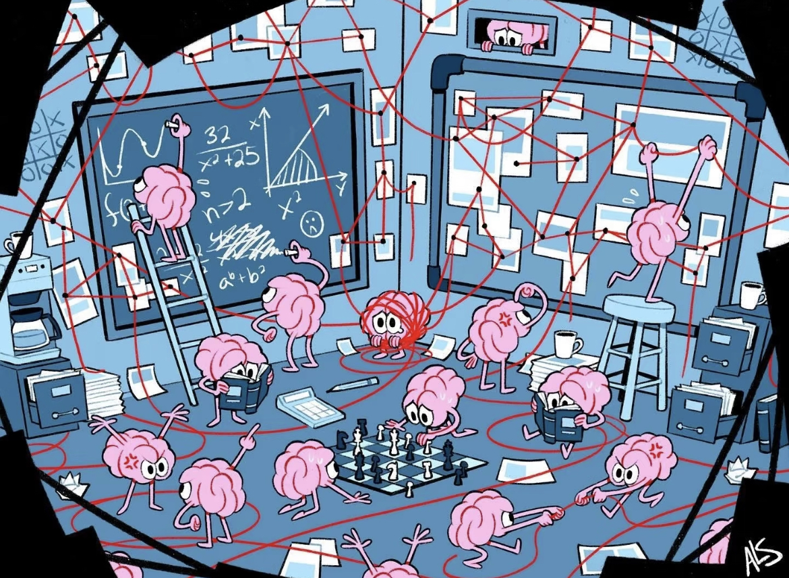

返回
大众科普
媒体聚焦
临床技术
关于我们
大众科普

意识障碍：当大脑“失联”，科学家如何重启生命的“开关”？——从神经科学的前沿研究到临床实践的突破，意识障碍的未来在哪里？
脑电波全解析：α波、β波、θ波、δ波、纺锤波、K复合波、慢波,大脑的“频率密码”如何影响我们的生活？
睡眠分期的奥秘：从入睡到苏醒，大脑如何度过每一个夜晚？
5G网络技术在医疗领域的革命性应用：机器人如何助力DBS手术，实现对植物状态患者的高效“唤醒”
意识障碍患者的全方位促醒治疗方案：个性化选择的重要性与从重症监护到全面康复的完整路径
脊髓电刺激技术在意识障碍促醒治疗中的机制与应用：探索神经调控如何激活大脑的觉醒系统
神经调控技术在意识障碍治疗中的前沿应用：从现状评估到未来发展趋势的全面解读
媒体聚焦
临床技术
深入解析植物人治疗中的经典药物：从药理机制到临床应用，全面了解药物如何促进患者意识的恢复
持续性植物状态患者的神经调控治疗策略：基于临床经验的全面总结，探索神经调控技术在意识恢复中的创新应用